Отличный результат приносит радость не только пациенту, но и доктору
Фото до и после маммопластики с описанием дают возможность оценить результат операции, которая считается одной из самых современных и предназначена для придания груди необходимой формы и объема. На данной странице представлены фотографии пациенток до и после операций выполненных пластическим хирургом Амирбаевым Максимом Анваровичем
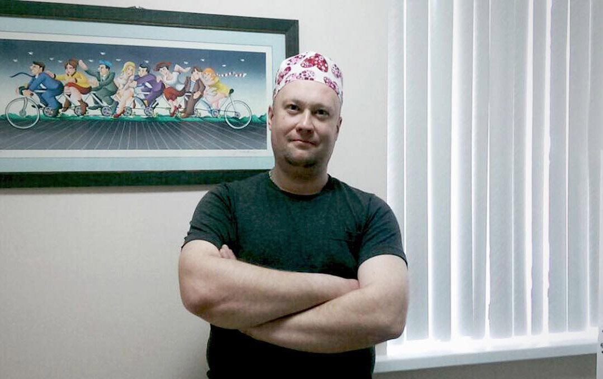
Для многих девушек нулевой размер груди является источником многочисленных комплексов и неуверенности в себе.
Поэтому на помощь приходит пластическая хирургия.
Фото спустя 1 месяц после операции.
Ещё присутствуют отёки, мышцы напряжены, все это проходит к 2-3 месяцам. Грудь будет становится все мягче день за днём, а форма натуральнее.
Модель и объём имплантов подбираются индивидуально, на консультации, с учетом ваших анатомических особенностей, и пожеланий.
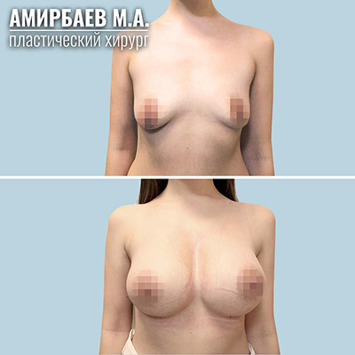
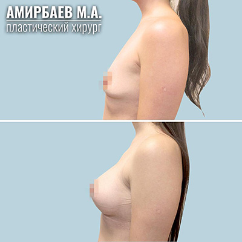
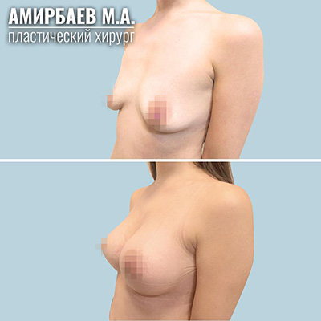
Фото спустя 1 месяц после операции. Ещё присутствуют отёки, мышцы напряжены, все это проходит к 2-3 месяцам. Грудь будет становится все мягче день за днём, а форма натуральнее. Модель и объём имплантов подбираются индивидуально, на консультации, с учетом ваших анатомических особенностей, и пожеланий.
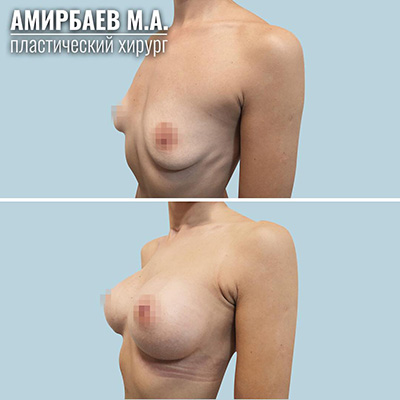
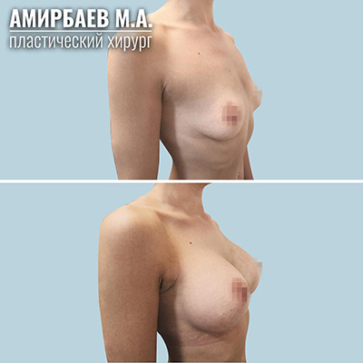
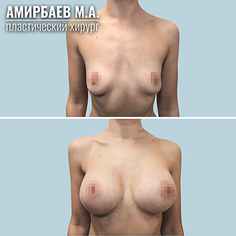
Фото спустя 1 месяц после операции. Ещё присутствуют отёки, мышцы напряжены, все это проходит к 2-3 месяцам. Грудь будет становится все мягче день за днём, а форма натуральнее. Модель и объём имплантов подбираются индивидуально, на консультации, с учетом ваших анатомических особенностей, и пожеланий.
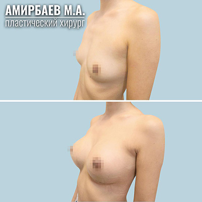
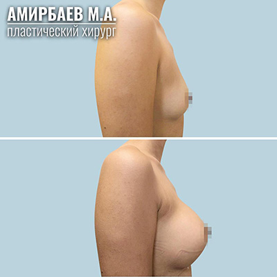
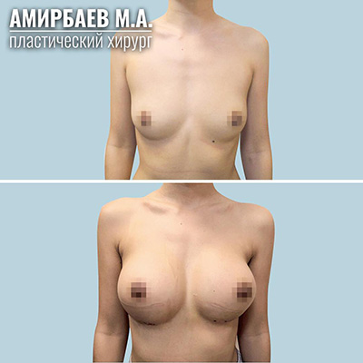
Фото спустя 1 месяц после операции.
Ещё присутствуют отёки, мышцы напряжены, все это проходит к 2-3 месяцам. Грудь будет становится все мягче день за днём, а форма натуральнее.
Модель и объём имплантов подбираются индивидуально, на консультации, с учетом ваших анатомических особенностей, и пожеланий.
Консультации бесплатные.
Запись по телефону 8 777 2000 712, для иногородних возможна консультация по WhatsApp, пишите.
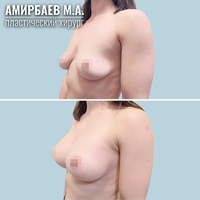
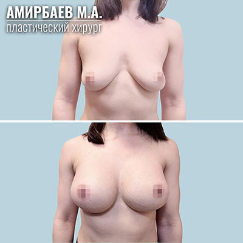
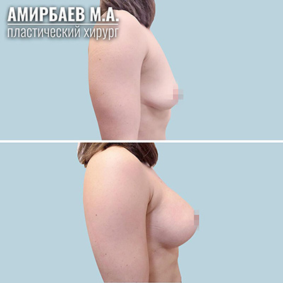
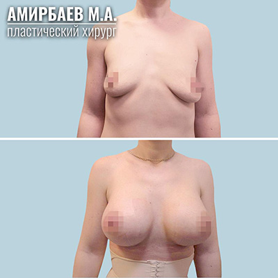
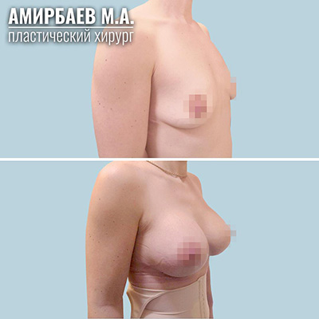
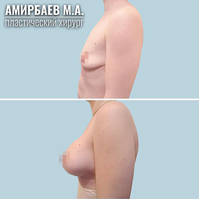
История пациентки:
«Привет всем. Я вообще думала об этом года три, так сказать зрела)))) но никогда не искала, ни врача, ни клинику.
Летом 18 года хорошая знакомая сделала грудь у МА, и вот тут я к ней прилипла)))) что, как, нравится ей, или сложно, пытала долго, но на приём к МА попала только в декабре, и на следующий день внесла предоплату.
Нам уже 1.5 месяца))) в эти выходные сьездила купила кучку новых вещей. Впервые появились открытые вырезы) и рубашки.
Что самое интересное, я вообще не думала ни о наркозе, ни о чем. Читаю сколько времени чат, видимо я сумасшедшая))) даже не задумалась ни на минуту))) что может что то пойти не так)
Зато сейчас довольна как слон, даже взгляд поменялся)
глаза горят от самой себя»
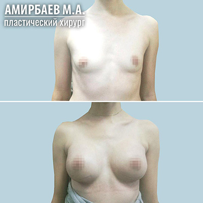
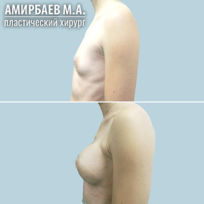
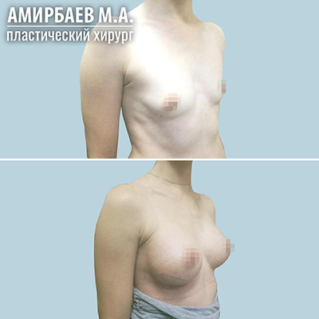
Хотите увидеть без топа?
И что было до?
Модель и объём имплантов подбираются индивидуально, на консультации, с учетом ваших анатомических особенностей, и пожеланий.
Консультации бесплатные.
Запись по телефону 8 777 2000 712, для иногородних возможна консультация по WhatsApp, пишите.
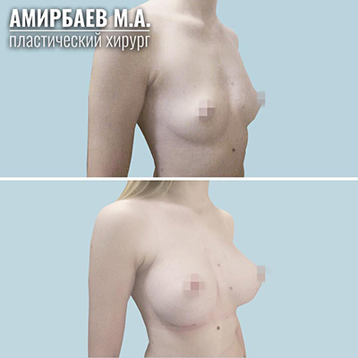
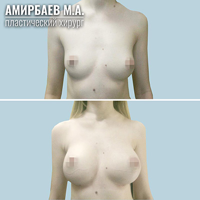
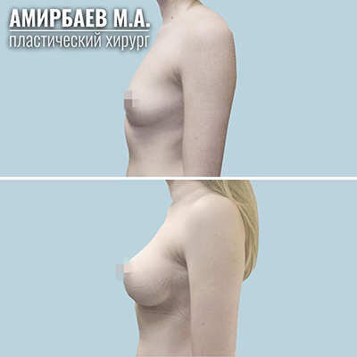